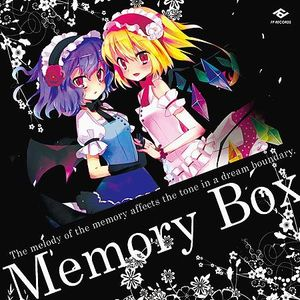
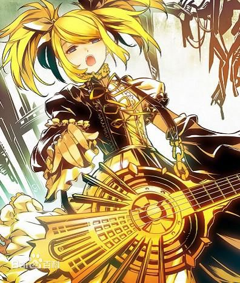

歌手：ふぉれす... 专辑：《memory box》
相なる二重の大きい丸顺缲り并んで合奏\画着双重大的圆圈一个接一个合奏
好きよ好き闻いて最期の最期まで\临终的临终听到所喜的所喜
同音异义と吐き舍てたって接触\说话同音异议，舍弃与人接触
欲望を埋めていく\连欲望也一并埋没
彼女が一番少女なのか？（原曲：U.N.オーエンは彼女なのか？）(off vocal)

相なる二重の丸顺缲り并んで合奏\画着双重大的圆圈一个接一个合奏
好きよ好き闻いて心の中まで\心中听到所喜的所喜
同音异义と吐き舍てたって接触\说话同音异议，舍弃与人接触
いなくなっていくだけ\也不仅仅是那样哦
彼女が一番少女なのか？ - kana
所属专辑：初音ミク-Project DIVA- 2nd NONSTOP MIX COLLECTION
街明(まちあ)かり 华(はな)やか/街上照明 光华璀璨
エーテル麻酔(まさい) の 冷(つめ)たさ/乙醚麻醉 的 冰冷
眠(ねむ)れない 午前二时(ごぜんいじ)/无法成眠的 凌晨两点
全(すべ)てが 急速(きゅうそく)に変(か)わる/一切事物 快速地转变
V家少数不适合翻唱的歌之一

君(きみ)の首(くび)を缔(し)める梦(ゆめ)を见(み)た/做了个紧勒住你脖子的梦
光(ひかり)の溢(あふ)れる昼下(ひるさ)がり/光明流泄的午后
君(きみ)の细(ほそ)い喉(のど)が跳(は)ねるのを/看著你纤细的颈子颤抖的模样
泣(な)き出(で)しそうな眼(め)で见(み)ていた/用泫然欲泣的双眼
镜音双子
镜音双子
(pa!!!打死尼~)
| ID | 性别 | 年龄 |
|---|---|---|
| Tuy | 男 | 18 |
| 帅哥 | 无敌!!! | |
请输入Email:
请按正确的格式填写邮箱请输入密码: 请再次输入密码:
密码为6到16位的数字哦
性别: 男女
城市:
爱好: 上网睡觉看里番
个人简介:
我玩正版，我受崇拜(广州好迪)©